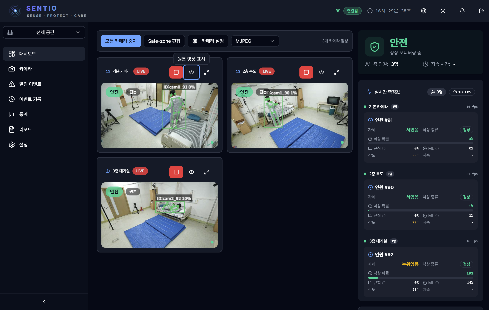
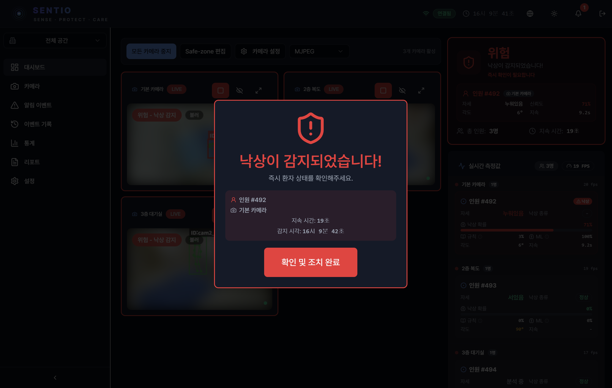

SENTIO AI
요양병원 낙상 감지 시스템
PoC 제안서
20건의 낙상 중 19건을 자동 감지
424개 실제 영상으로 검증 완료
2026년 3월 | SENTIO AI
Executive Summary
의사결정자를 위한 핵심 요약
연간 28~35% 발생, 환자안전사고 2위
추가 장비 없이 도입 가능
귀 병원 환경에서 직접 검증 후 결정
제안 개요
| 대상 | 요양병원 · 요양시설 (기존 CCTV 보유 기관) |
| 내용 | AI 기반 실시간 낙상 감지 시스템 'SENTIO' PoC 운영 |
| 기간 | 2~4주 (설치 1일 + 운영 + 결과 리포트) |
| 비용 | PoC 기간 전액 무료 — 성과 확인 후 도입 결정 |
문제 인식
낙상 사고, 얼마나 심각한가?
낙상 후 골든타임 30분 이내 발견 시
중증 전환율이 50% 감소합니다.
그러나 현재 평균 발견 시간은 30분 이상입니다.

현장의 어려움
24시간 감시는
현실적으로 불가능합니다
낙상 사고 1건당 평균 비용: 3,000만원 (골절 치료 + 입원 연장 + 법적 비용)
솔루션 소개
SENTIO는 무엇인가?
기존 CCTV에 AI를 연결하면, 환자가 넘어지는 순간 간호사에게 즉시 알려줍니다.
SENTIO 실제 동작 화면
비교 분석
SENTIO vs 기존 방식
| 항목 | 기존 CCTV | 기존 센서 솔루션 | SENTIO |
|---|---|---|---|
| 낙상 감지 | 사람이 직접 확인 | 별도 센서 필요 | AI 자동 감지 |
| 추가 장비 | — | 1,000만원+ | 불필요 (0원) |
| 프라이버시 | 원본 저장 | 해당 없음 | 관절점만 처리 |
| 다중 추적 | 불가 | 제한적 | 동시 추적 가능 |
| 감지 속도 | 발견 시까지 | 센서 지연 | 3초 이내 |
| 월 비용 | — | 50만원+ | 30만원~ |
핵심 차별점: 초기 비용 0원 (기존 CCTV 활용) + 프라이버시 보호 (관절점만 분석) + 3초 이내 감지
작동 원리
어떻게 동작하나?
정상 모니터링 화면

낙상 감지 알림 화면
AI 분석 과정
AI가 하는 5가지 일
AI 관절 추적 실시간 분석
알림 체계
3단계 알림 시스템
이상 없음. 모니터링만 지속합니다.
화면 표시만
이상 징후 감지. 화면 경고가 표시됩니다.
화면 경고
낙상 감지. 즉각 대응이 필요합니다.
소리+화면+푸시+음성 동시 발령
낙상 감지 시 대시보드 경고 화면
프라이버시
환자 프라이버시, 어떻게 보호하나?
핵심 원칙: 원본 영상 미저장 · AI 분석 후 즉시 폐기 · 개인정보보호법 준수


성능 검증
424개 실제 영상으로 검증한 정확도
유형별 성능
낙상 유형별 감지율
경쟁력 비교
| 구분 | SENTIO | A 연구 | B 연구 | 기존 센서 |
|---|---|---|---|---|
| 검증 규모 | 424건 | 60건 | 30건 | 소규모 |
| 감지율 | 95.2% | 92~95% | 93~95% | 60~80% |


신뢰성 근거
왜 SENTIO의 수치를 신뢰할 수 있나?
주요 기능
주요 기능 한눈에
PoC 제안
귀 병원 환경에서 직접 검증하세요
비용 부담 없이, 2~4주간 실제 운영 환경에서 SENTIO의 성능을 직접 확인하실 수 있습니다.
| 목적 | 귀 병원 실제 환경에서 낙상 감지 성능 검증 |
| 기간 | 2~4주 (설치 1일 포함) |
| 범위 | 카메라 2~4대 (병실·복도 핵심 구역) |
| 비용 | PoC 기간 전액 무료 |
병원 측 준비사항
· 기존 CCTV (IP 카메라, RTSP 지원)
· 네트워크 연결 (유선 LAN 권장)
· 모니터링용 PC/태블릿 1대
· 담당자 지정 (설치 협조)
SENTIO 제공사항
· AI 분석 서버 설치 및 설정
· 시스템 교육 (30분)
· PoC 결과 리포트 (KPI 기반)
도입 프로세스
5단계 도입 프로세스
무료
호환성 확인 무료
실제 운영 테스트
알림 통계 제공
교육·기술지원
핵심: 무료 PoC(2~4주)로 실제 병원 환경에서 효과를 직접 확인한 후 도입 여부를 결정할 수 있습니다.
문의부터 결과 리포트까지 전 과정을 SENTIO가 지원합니다.
PoC 성과 측정
명확한 KPI로 객관적 성과 평가
낙상 감지율
실제 낙상 대비
감지 비율
오탐율
잘못된 알림
비율
알림 시간
낙상→알림
소요 시간
간호사 만족도
편의성·정확성
도움 정도
요금제
SaaS 구독형 — 추가 장비 비용 없음
· 한국어 음성 경고
· 이메일 리포트
· 다중 카메라 · EMR 연동
· 상세 통계 리포트
· 우선 기술 지원
· 전체 층·건물 커버
· 맞춤 개발 · SLA 보장
초기 장비 비용 0원 (기존 CCTV 활용) | SENTIO 30만원~ vs 기존 센서 솔루션 1,000만원+ 초기비용 + 50만원+ 월비용
기대 효과
도입 시 어떤 효과를 기대할 수 있나?
ROI 시뮬레이션
월 30만원 투자 → 낙상 1건 예방 시 약 3,000만원 절감
투자 대비 100배 효과
시장 기회
국내 연 10조 요양 시장, 연 8% 성장 중
로드맵
핵심 요약